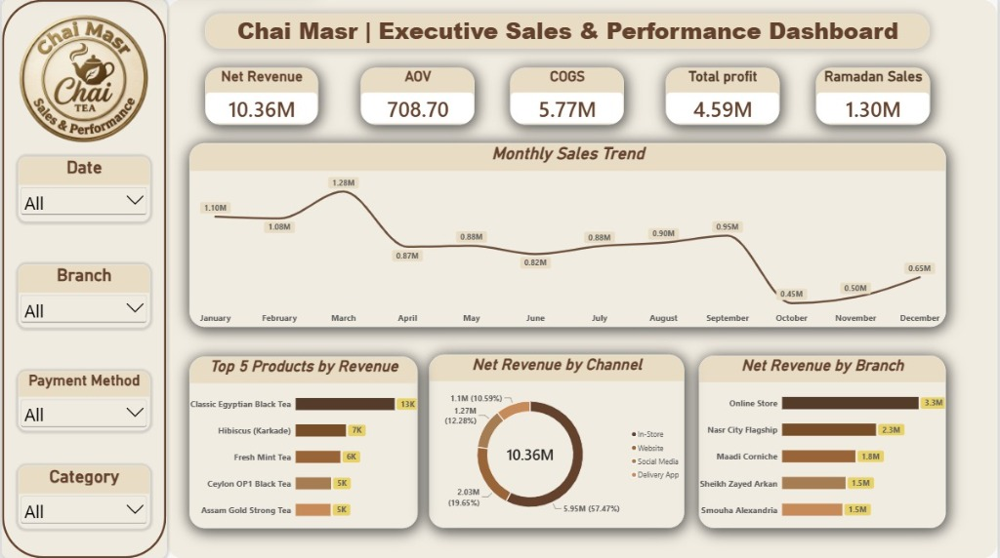
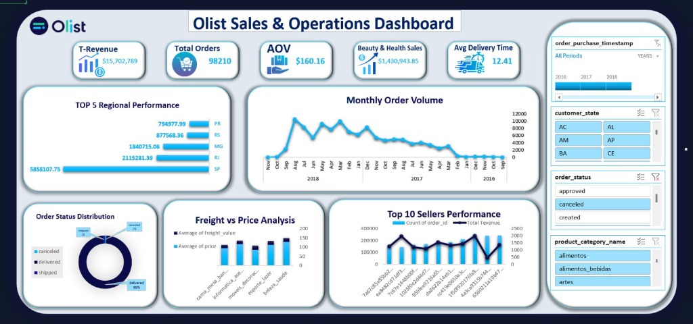

Data Analysis & Spreadsheets
Structuring, validating, and exploring datasets for operational insights.
"Turning raw data into meaningful insights that support better business decisions."
I work with Excel, SQL, Power BI, and Power Query to clean, transform, analyze, and visualize data. Through hands-on projects, I explore business performance, sales trends, profitability, and supply chain operations.
I am a Computer Science student expected to graduate in 2028, with a strong interest in Data Analytics and Business Intelligence.
I enjoy exploring data, identifying patterns, and turning complex information into clear insights that help businesses understand their performance and make informed decisions.
My hands-on projects cover sales and business performance analysis, e-commerce analytics, and dairy supply chain management. Through these projects, I have worked with data preparation, relational database design, SQL queries, DAX measures, data modeling, and interactive Power BI dashboards.
I am continuously developing my technical and analytical skills, with the goal of starting my career as a Junior Data Analyst and contributing to data-driven business decisions.
Faculty of Computers and Information
Tools and analytical techniques I use to prepare data, investigate business performance, and build interactive reports.
Structuring, validating, and exploring datasets for operational insights.
Relational modeling, multi-table queries, and analytical aggregations.
End-to-end report design, Star Schema data modeling, and DAX metric formulation.
Translating business questions into analytical frameworks and actionable findings.
Continuously expanding workflow version control and collaborative development with Git and GitHub.
Case studies of practical analytics, data modeling, SQL engineering, and business intelligence dashboards.
Developed an interactive executive dashboard to analyze sales performance, revenue distribution, product performance, branch performance, and business profitability for a simulated tea retail business.
Used Power Query to clean and transform the source data, address data quality issues, and prepare the tables for analysis. Developed DAX measures to calculate business performance metrics and support interactive reporting.
The dashboard provides a consolidated view of sales and profitability, helping decision-makers explore performance trends, compare business segments, and identify areas that may require further investigation.
Interactive Power BI dashboard • Data transformation workflow • DAX measures • Analytical visualizations
An individual data analytics project focused on exploring and analyzing operational data related to a dairy manufacturing business.
Used Excel and Power Query to prepare and transform the data, followed by Power BI to support analysis and visual reporting.
The project demonstrates the application of data preparation, analytical thinking, and business intelligence techniques to a manufacturing context.
Project files • Data preparation workflow • Analytical reports and visualizations
An individual project combining relational database design, SQL-based analysis, and business intelligence to explore dairy supply chain operations.
Organize supply chain data in a relational structure, query and analyze business transactions, explore supply chain performance using SQL, and present analytical findings through Power BI.
The project demonstrates the integration of database development, advanced SQL querying, data preparation, and business intelligence within a supply chain context.
Relational database schema • SQL scripts (24 analytical queries) • Data preparation workflow • Power BI analytical outputs
WITH RankedShipments AS (
SELECT SupplierID, ProductID, OrderDate,
DATEDIFF(day, OrderDate, DeliveryDate) AS LeadTimeDays,
AVG(LeadTimeDays) OVER(PARTITION BY SupplierID) AS AvgLeadTime
FROM Fact_Transactions
)
SELECT * FROM RankedShipments WHERE LeadTimeDays > AvgLeadTime;An individual data analytics project using e-commerce data to explore sales performance, geographic revenue distribution, and delivery operations.
Examined revenue distribution across geographic areas, sales and business performance, average delivery time, and delivery-related trends through interactive dashboards.
The project demonstrates the ability to transform raw e-commerce data into a structured analytical model and interactive reports that support business performance monitoring.
Power BI data model • DAX measures • Data preparation workflow • Interactive dashboards
Explore high-resolution production dashboards and comprehensive SQL query documentation developed for enterprise data exploration.

High-resolution view of the executive reporting interface showcasing Net Revenue (10.36M), AOV (708.70), COGS (5.77M), Total Profit (4.59M), Ramadan Sales (1.30M), monthly sales trend curves, and channel/branch revenue distributions.

Executive view analyzing $15.7M total revenue, 98,210 orders, $160.16 average order value, 12.41 days average delivery time, top 5 regional performance, freight vs price analysis, and top 10 sellers performance.
Full technical specification and query documentation detailing the 10-table relational schema (3NF) and 7 core analytical query problems solved: Yield percentage calculation with Window Functions, Running Totals, Supplier Scorecards via CTEs, Material Usage Variance benchmarking, Latest Orders per Supplier, and Top Rankings by Category.
Applying data analytics techniques through hands-on projects and continuous technical development.
Focus Areas:
Focus Areas:
Focus Areas:
Focus Areas:
Applying data analytics and business intelligence techniques to organize information, explore performance, and communicate useful findings.
Preparing raw datasets for analysis by identifying data quality issues, organizing tables, and applying structured transformation workflows using Excel and Power Query.
Writing SQL queries to retrieve, combine, summarize, and analyze relational data to answer business questions.
Developing interactive dashboards with relevant KPIs, data models, DAX measures, and visualizations that make business performance easier to explore.
Exploring sales trends, revenue distribution, product performance, and operational metrics to identify patterns and communicate analytical findings.
I am interested in Junior Data Analyst opportunities, internships, and projects where I can apply my analytical and technical skills to solve business problems.
Feel free to connect with me professionally.
Client-side validated form. Connect with Amr Mohamed for analytics roles and technical inquiries.